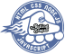

<div class="footer">
  <div class="footer-container">
    <div class="rs-logo">
      <a class="footer__link" href="https://rs.school/js/">
        
      </a>
    </div>
    <div class="github-members">
      <a class="footer__link" href="https://github.com/WeronikaFed">
        <mat-icon class="footer-icon" aria-hidden="false">person</mat-icon>
        <p class="name">Вероника</p>
      </a>
      <a class="footer__link" href="https://github.com/personagrata9">
        <mat-icon class="footer-icon" aria-hidden="false">person</mat-icon>
        <p class="name">Ирина</p>
      </a>
      <a class="footer__link" href="https://github.com/helacyan">
        <mat-icon class="footer-icon" aria-hidden="false">person</mat-icon>
        <p class="name">Андрей</p>
      </a>
    </div>
    <p class="year">2022</p>
  </div>
</div>
